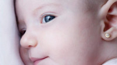
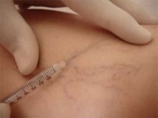

Saiba um pouco mais sobre os serviços disponíveis

Furo humanizado
Trata-se de um método no qual se combina o uso de pomada anestésica seguido da aplicação de técnicas de acupuntura que permite realizar o furo no ponto da orelha menos enervado.
Cuidados com o recém nascido
Para manter o bebê saudável deve-se atentar quanto aos cuidados básico quer seja o banho, aleitamento e a sua higienização. Além disso, ressalta-se a importância de se cumprir com o ciclo vacinal.

PEIM
O Procedimento Estético Invasivo para Microvasos é uma técnica que tem por finalidade eliminar os microvasos decorrentes de fatores que interferem a circulação sanguínea nos membros inferiores, tais como predisposição genética e gestação, com isso, melhora-se o aspecto da região acometida.